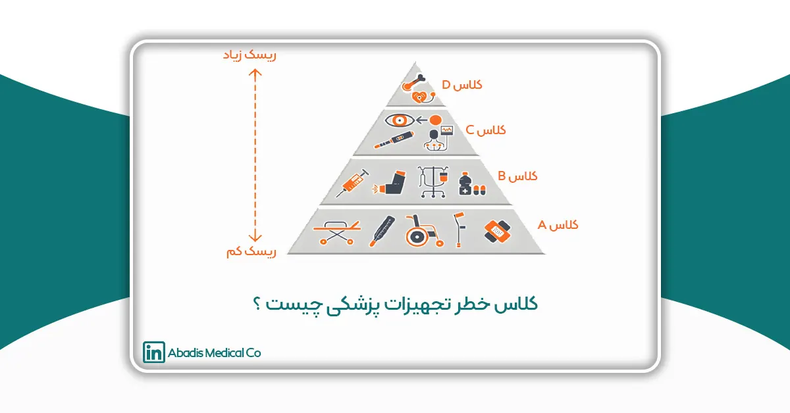
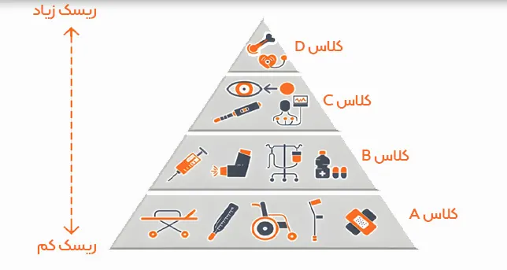

مقدمه
تجهیزات پزشکی براساس میزان خطر، ریسک، اهمیت محصول و همچنین میزان تماس آن با بدن انسان طبقه بندی می شوند؛ در سال ۱۹۷۶ قانون فدرال مصوب سازمان غذا و دارو آمریکا (FDA)، سیستم کلاس بندی تجهیزات پزشکی مبتنی بر میزان خطر دستگاههای پزشکی ( کلاس خطر دستگاههای پزشکی ) ایجاد گردید. در این سیستم هر دستگاه بر اساس سطح کنترل لازم برای اطمینان از ایمنی و اثربخشی آن، به یکی از چهار کلاس اختصاص داده میشوند: کلاس A، کلاس B، کلاس C و کلاسD. در این مقاله به بررسی و طبقه بندی تجهیزات پزشکی بر اساس ریسک آنها میپردازدیم.
انواع کلاس خطر تجهیزات پزشکی عبارتند از:
- کلاس I (خطر کم) یا A : کنترل های عمومی
- کلاس II (خطر کم تا متوسط) یا B : کنترل های عمومی و کنترل های ویژه
- کلاس III (خطر متوسط تا زیاد) یا C : کنترلهای عمومی و تأیید پیش از بازار (PMA)
- کلاس IV (خطر زیاد) یا D : کنترلهای عمومی و تأیید پیش از بازار (PMA)
کلاس خطر A: این کلاس خطر مربوط به تجهیزات پزشکی است که غیر تهاجمی بوده و با بافت های داخلی بدن انسان در ارتباط نیستند؛ مانند پانسمان های زخم، چسب زخم، بطری های جمع اوری ادرار، جوراب واریس، تخت بیمارستانی، الکترودهای غیرتهاجمی، تجهیزات ام.آر.آی و سونوگرافی، نازال کانولا، ماسک اکسیژن دریل ها و اره های جراحی که به صورت دستی کار میکنند و وسایل تنقیه از جمله تجهیزات پزشکی کلاس خطر A به شمار می آید. لازم به ذکر است ۴۷ درصد از تجهیزات پزشکی در این دسته قرار میگیرند و ۹۵ درصد آنها از فرآیند نظارتی معاف هستند.
کلاس خطر B: در صورتی که تجهیزات پزشکی کلاس خطر A استریل شده باشند در گروه کلاس خطر B قرار می گیرد. مثل سرنگ استریل، پانسمان استریل، ویلچر برقی، برخی از کیت های تست بارداری.
۴۳ درصد از تجهیزات پزشکی در کلاس B قرار می گیرند.
کلاس خطر C: در این کلاس تجهیزاتی قرار دارند که جان بیمار وابسته به عملکرد درست آنها است و این وسایل تاثیر بسیار زیادی بر روی تشخیص، کنترل و یا درمان بیماری ها دارند؛ این کلاس خطر مربوط به تجهیزاتی است که با خون و بافتهای انسان در ارتباط هستند.
چسب زخم جراحی، کیسههای انتقال خون و مواردی مانند سوزن تزریق و تجهیزاتی از این قبیل که با خون و بافتهای انسان در تماس هستند همگی دارای کلاس خطر C میباشند.
کلاس خطر D: پر ریسک ترین تجهیزات پزشکی و هر نوع از تجهیزاتی که در داخل بدن مورد استفاده قرار می گیرند در گروه کلاس خطر D قرار دارند، مانند لوازم جراحی، بخیهها، دریچه قلب مصنوعی.

طبقه بندی تجهیزات پزشکی در نقاط مختلف دنیا
|
میزان ریسک |
ایران | اتحادیه اروپا | کانادا | آمریکا |
|
کم |
A | 1 | 1 | I |
| کم تا متوسط |
B |
2a | 2 |
II |
|
متوسط تا زیاد |
C |
2b | 3 |
III |
| زیاد | D | 3 | 4 |
IV |
جدول 1) نشانگرهای کلاس خطر در کشور های مختلف
سطح ریسک کلاس خطر تجهیزات پزشکی
طبقه بندی کلاس خطر و سطح ریسک هر یک از تجهیزات پزشکی در ایران بر اساس مقررات سازمان غذا و داروی ایران (سازمان غذا و دارو) صورت می پذیرد.
|
کلاس |
سطح ریسک | نمونه تجهیزات |
|
A |
ریسک فردی پایین / ریسک بهداشت عمومی پایین | آنالایزرها ، جوراب واریس |
|
B |
ریسک فردی متوسط / ریسک بهداشت عمومی پایین |
سوزنهای زیرجلدی ، ساکشن |
| C | ریسک فردی بالا / ریسک بهداشت عمومی متوسط |
ونتیلاتور و تجهیزات بیهوشی |
| D | ریسک فردی بالا / ریسک بهداشت عمومی بالا |
کاتترهای قلبی عروقی ، پروتز جایگزین مفاصل |
جدول 2) سطح ریسک کلاس خطر های تجهیزات پزشکی
طبقه بندی تجهیزات پزشکی بر اساس خطر و ریسک آنها
این نوع طبقه بندی یکی از روشهای مهم در ارزیابی ریسک و خطر تجهیزات پزشکی است. در این روش، تجهیزات بر اساس نوع ریسک ها و خطراتی که ممکن است برای کادر درمان و بیماران ایجاد نمایند، طبقه بندی میشوند. این طبقه بندی سبب درک بهتری از خطرات و محدودیتهای مرتبط با هر تجهیزات می شود.
این نوع طبقه بندی معمولاً شامل سه سطح میباشد:
1) تجهیزات پزشکی با خطر بالا
تجهیزات پزشکی که استفاده نادرست از آنها میتواند خطرات جدی و جبران ناپذیری را برای بیماران، و کاربران کادر درمان ایجاد نمایند، در این سطح قرار میگیرند.
2) تجهیزات پزشکی با خطر متوسط
تجهیزات پزشکی که بخشی از استفادههای نامطلوب و خطرناک را پوشش میدهند و ممکن است در شرایط خاص خطرات قابل توجهی ایجاد کنند، در این سطح قرار میگیرند. استفاده صحیح و دقیق از این تجهیزات به آموزش، نگهداری و تدابیر ایمنی دقیق نیاز دارد.
3) تجهیزات پزشکی با خطر کم
تجهیزات پزشکی که با استفاده صحیح و مطابق با دستورالعملهای استفاده، خطرات قابل مدیریت و کنترل را ایجاد میکنند، در این سطح قرار میگیرند. این تجهیزات به طور کلی ایمن هستند و فقط نیاز به رعایت استانداردها دارند.
طبقه بندی بر اساس خطر این امکان را میدهد تا اقدامات ایمنی، آموزش و نظارت مورد نیاز را برای هر دسته از تجهیزات تعیین کنند. همچنین، به سازمانها و مراکز درمانی کمک میکند تا استراتژیها و سیاستهای ایمنی مناسبی اتخاذ نموده و ایمنی بیشتری را برای بیماران خود فراهم کنند.
کلاس خطر محصولات شرکت مخازن طبی آبادیس
| ردیف | نام محصول | کلاس |
| 1 | کیسه ساکشن یکبار مصرف | A |
| 2 | ساکشن تیوب | B |
| 3 | فیلتر ساکشن | A |
جدول 3) کلاس خطر محصولات شرکت مخازن طبی آبادیس
جمع بندی
با توجه به طبقه بندی تجهیزات پزشکی بر اساس ریسک آنها، میتوان نتیجه گرفت که طبقه بندی دقیق تجهیزات پزشکی بر اساس ریسک ها اهمیت بسیاری در حوزه بهبود خدمات درمانی و ایمنی بیماران و کادر درمان دارد. با استفاده از این طبقه بندی، سازمانها، تولیدکنندگان، متخصصان و کاربران تجهیزات پزشکی قادر خواهند بود تجهیزات مناسبی را انتخاب کنند، مقررات را رعایت کنند، و بهرهوری و ایمنی درمان را بهبود بخشند.
منابع
- https://health.ec.europa.eu/system/files/2021-10/mdcg_2021-24_en_0.pdf
- https://health.ec.europa.eu/system/files/2023-02/md_mdcg_2020_guidance_classification_ivd-md_en.pdf